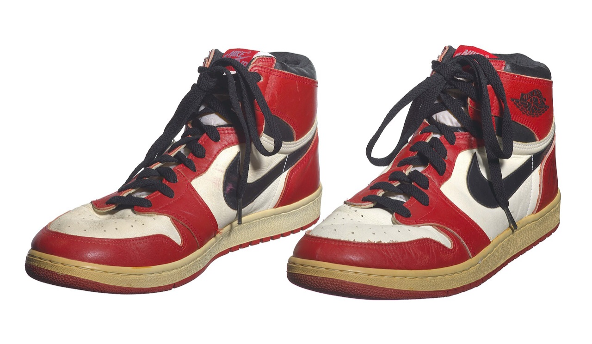
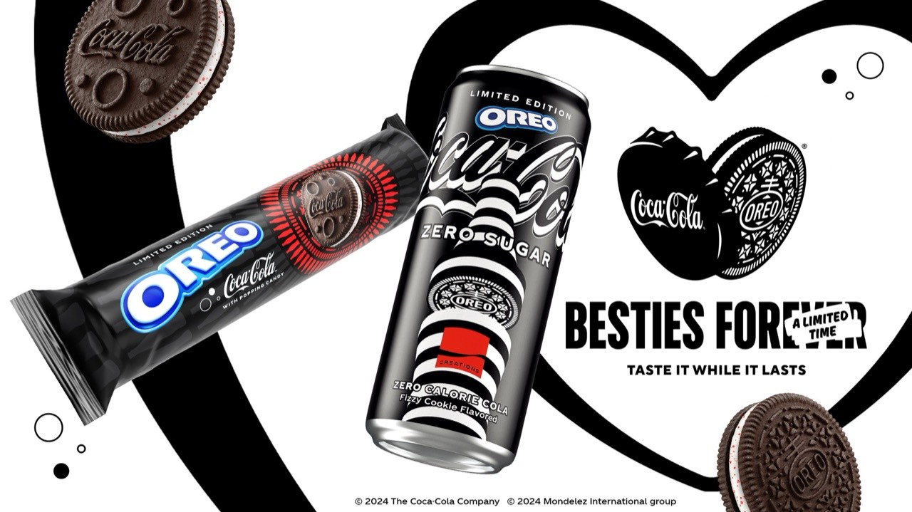
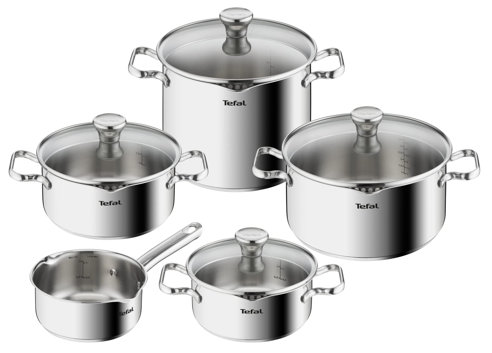

Exoflow × Groupe SEB · Formation chefs de marqueBrand managers training
La Creator Economy.The Creator Economy.
Comprendre, activer et mesurer les leviers des créateurs et des licences pour conquérir de nouvelles audiences — un playbook pour les marques du Groupe SEB.Understand, activate and measure creator and licensing levers to win new audiences — a playbook for Groupe SEB brands.
8levierslevers6bases de donnéesdatabases5questions d'échangediscussion questionsFR / EN
Exoflow est le studio de conseil en innovation & design de Victor Bouin. Nous concevons des formations et des dispositifs d'innovation pour les départements R&D, marketing et marque des grands groupes — dont le Groupe SEB. Ce playbook en est une application.Exoflow is Victor Bouin's innovation & design consultancy. We craft training and innovation systems for the R&D, marketing and brand teams of major groups — including Groupe SEB. This playbook is one such application.
01
MéthodologiqueMethodological
Chaque intervention s'appuie sur une méthode d'innovation reconnue — ses outils, ses limites, son terrain. Pas de buzzwords.Every session is built on a recognized innovation method — its tools, its limits, its field of use. No buzzwords.
02
OutilléeTool-equipped
Vos équipes repartent avec des templates prêts à l'emploi, des cheat-sheets et des cas testés en atelier — comme ce playbook et ses bases de données.Your teams leave with ready-to-use templates, cheat-sheets and cases tested in workshop — like this playbook and its databases.
03
MémorisableMemorable
Des supports réactivables après la session (PDF, outils, IA pédagogique) pour ancrer les apprentissages dans la durée.Re-activatable assets after the session (PDF, tools, learning AI) to anchor learning over time.
Victor BouinVictor Bouin— designer & entrepreneurdesigner & entrepreneur
Diplômé d'emlyon (Programme Grande École) et du double diplôme emlyon × Centrale Lyon (Master IDEA — Innovation, Design, Entrepreneurship, Art), spécialisé en gestion de projets d'innovation par le Design Thinking. Fondateur d'Exoflow (2017) et co-dirigeant d'Acmé, institut d'études qualitatives (40 ans d'expérience). Formateur depuis 6 ans (Cité du Design, emlyon, ESSCA, Sciences Po Lyon, Grenoble EM, Rennes SB).Graduate of emlyon (Grande École Program) and the emlyon × Centrale Lyon double degree (Master IDEA — Innovation, Design, Entrepreneurship, Art), specialized in innovation project management through Design Thinking. Founder of Exoflow (2017) and co-director of Acmé, a qualitative research institute (40 years of experience). Trainer for 6 years (Cité du Design, emlyon, ESSCA, Sciences Po Lyon, Grenoble EM, Rennes SB).
Exoflow · innovation & Design Thinking — depuis 2017innovation & Design Thinking — since 2017
Acmé · études qualitatives & verbatim IA — associéqualitative research & AI verbatim — partner
Références — ils nous font confianceReferences — they trust us
Groupe SEBTefalSchneider ElectricBNP Paribas PFSanofiLactalisEDFGroupamaNexityYves RocherbioMérieuxSolvayUbisoftVinci AirportsTotalEnergiesESSCARenaultStellantisCNRemlyon Executive
Conseil & formation (Exoflow) · études qualitatives consommateurs (Acmé) — secteurs FMCG, auto, santé, énergie.Consulting & training (Exoflow) · qualitative consumer research (Acmé) — FMCG, automotive, health, energy.
Acte IAct I
La cuisine a changé d'écranThe kitchen changed screens
« Qui a cuisiné avec une vidéo ouverte, cette semaine ? »“Who cooked with a video playing, this week?”
Le produit est dans la pièce ; l'attention est dans le feed.The product is in the room; attention lives in the feed.
01 · Le constatThe starting point
Les marques ne possedent plus l'attention. Les createurs, oui.Brands no longer own attention. Creators do.
La creator economy a déplacé le pouvoir de diffusion des marques vers les individus et les communautés. Pour un groupe comme SEB, c'est à la fois un risque (perte de contrôle, ROI incertain) et une opportunité massive : atteindre des audiences jeunes, devenir top of mind, et transformer un capital culinaire en viralité.The creator economy has shifted distribution power from brands to individuals and communities. For a group like SEB, it is both a risk (loss of control, uncertain ROI) and a massive opportunity: reaching young audiences, becoming top of mind, and turning culinary equity into virality.
250Mds$
Taille estimée de la creator economy en 2024.Estimated creator economy size in 2024.
ordre de grandeur / order of magnitude
+500Mds$
Projection à l'horizon 2027.Projection by 2027.
industry estimates
8
leviers d'activation detailles dans ce playbook.activation levers detailed in this playbook.
~780
entrees dans les bases de données marques, licences, créateurs, artistes.entries across the brand, license, creator and artist databases.
La valeur circule en boucle : la marque ne loue plus l'attention, elle l'alimente.Value flows in a loop: the brand no longer rents attention, it feeds it.
02 · Premier regardFirst look
Voilà où vous êtes aujourd'hui.This is where you stand today.
Audience sociale × intensité de la stratégie créateurs : le Groupe SEB face à ses concurrents. Notez où se placent SharkNinja et les autres — gardez cette carte en tête, on y revient à la fin pour décider quoi en faire.Social audience × creator-strategy intensity: Groupe SEB vs its competitors. Note where SharkNinja and the others sit — keep this map in mind, we come back to it at the end to decide what to do about it.
⏳ On y revient à l'acte V — avec le plan.⏳ We come back to it in Act V — with the plan.
Acte IIAct II
Le nouveau terrain de jeuThe new playing field
« À votre avis : combien pèse la creator economy ? »“Your guess: how big is the creator economy?”
Plateformes, créateurs, audiences — les ordres de grandeur d'abord.Platforms, creators, audiences — orders of magnitude first.
03 · Parties prenantesStakeholders
Qui fait quoi dans l'écosystèmeWho does what in the ecosystem
CréateursCreators
Créateurs & KOL/KOCCreators & KOL/KOC
Du nano au megastar. Detiennent l'audience et la relation parasociale.From nano to megastar. They own the audience and the parasocial bond.
AgencesAgencies
Agences & MCNAgencies & MCN
Representent, negocient, produisent (UUUM au Japon). Intermediaires clés en Asie.Represent, negotiate, produce (UUUM in Japan). Key Asian intermediaries.
MarquesBrands
Marques & IPBrands & IP
Apportent budget, produit et legitimite. Parfois éditrices de contenu (Red Bull).Bring budget, product and legitimacy. Sometimes content publishers (Red Bull).
PlateformesPlatforms
PlateformesPlatforms
Chacune son format favori et son modèle commerce (Douyin = livestream, Pinterest = intention).Each with a favored format and commerce model (Douyin = livestream, Pinterest = intent).
Explorez les plateformes et leurs formats favoris dans la section Explore platforms and their favored formats in the Bases de donnéesDatabases.
04 · Bases de donnéesDatabases
~780 entrées, explorables~780 entries, explorable
Marques, licences, influenceurs (dont ~75 food), artistes, collaborations et plateformes — avec data-visualisation, nuage interactif et explorateur filtrable. Les outils s'ouvrent dans une page dédiée, pour garder le playbook lisible.Brands, licenses, influencers (incl. ~75 food), artists, collaborations and platforms — with data-viz, an interactive cloud and a filterable explorer. The tools open in a dedicated page to keep the playbook readable.
84
marques par pays & secteurbrands by country & sector
« Quel levier a fait ça ? »“Which lever did that?”
Huit leviers et six business models — racontés par les cas qui les ont prouvés.Eight levers and six business models — told through the cases that proved them.
05 · Les 8 leviersThe 8 levers
Du levier de notoriété au levier de conversionFrom awareness levers to conversion levers
Chaque levier sert un objectif différent. À gauche, on construit la notoriété ; à droite, on déclenche l'achat.Each lever serves a different goal. On the left you build awareness; on the right you trigger purchase.
Un exemple par levier, de gauche (notoriété) à droite (conversion). Déposez l'image officielle dans assets/img/lever-examples/ ou suivez la source ↗.One example per lever, from left (awareness) to right (conversion). Drop the official image into assets/img/lever-examples/ or follow the source ↗.
Image à fournir source ↓Image to add source ↓
Placement
Aston Martin × James Bond
Placement auto iconique : notoriété par association, sans démo ni discours commercial.Iconic car placement: awareness by association, no demo or sales pitch.
Films de créateurs tournés au smartphone, diffusés en pub et sur leurs chaînes.Creator films shot on the phone, distributed as ads and on their channels.
Cocottes et bouilloire Pikachu sous licence : un ustensile devient objet de collection.Licensed Dutch ovens and Pikachu kettle: a utensil becomes a collectible.
Collection « Adapt » co-conçue avec la créatrice : rôle éditorial réel, sell-out rapide.Co-designed 'Adapt' collection: a real editorial role for the creator, fast sell-out.
Concevoir un produit ou un contenu AVEC un créateur, qui apporte un vrai role éditorial. Du simple co-design à la marque co-détenue.Designing a product or content WITH a creator who has a genuine editorial role. From co-design to a co-owned brand.
Pro
Authenticité et fraicheur créativeAuthenticity and creative freshness
Accès direct à la communautéDirect community access
Contre / Con
Négociation et partage de valeur complexesComplex value-sharing and negotiation
Dependance a une personneDependence on one person
Deux marques co-signent un produit où une campagne pour additionner audiences et imaginaires (Coca-Cola × Oreo, Stanley × Starbucks).Two brands co-sign a product or campaign to combine audiences and worlds (Coca-Cola × Oreo, Stanley × Starbucks).
Pro
Effet de halo, buzz immediatHalo effect, instant buzz
Partage des coûts et des risquesShared costs and risk
Contre / Con
Risque de dilution si mauvais fitDilution risk if poor fit
Gouvernance a deuxTwo-way governance
Payer des royalties pour exploiter une IP (personnage, film, jeu) sur ses produits : Le Creuset × Pokemon, McDonald's Happy Meal.Paying royalties to use an IP (character, film, game) on your products: Le Creuset × Pokemon, McDonald's Happy Meal.
Pro
Désirabilité et collection (drops)Desirability and collecting (drops)
Accede a un fandom pre-existantTaps a pre-existing fandom
Contre / Con
Royalties et contraintes d'usageRoyalties and usage constraints
Effet de mode parfois courtSometimes short-lived hype
Inserer la marque dans le format natif du créateur (intégration vidéo, lecture sponsorisee), modèle CPM/affiliation : NordVPN × YouTubers.Inserting the brand into the creator's native format (video integration, sponsored read), CPM/affiliate model: NordVPN × YouTubers.
Coût maîtrise au résultatCost controlled on performance
Contre / Con
Moins différenciant, lassitude possibleLess distinctive, possible fatigue
Confier le produit a un créateur expert (food, tech) pour un test/démo credible. Clé pour l'électroménager : MKBHD, chefs YouTube.Handing the product to an expert creator (food, tech) for a credible test/demo. Key for appliances: MKBHD, YouTube chefs.
Pro
Preuve et demonstration d'usageProof and usage demonstration
Très haute valeur de conversionVery high conversion value
Contre / Con
Risque d'avis negatif (non contrôle)Risk of a negative (uncontrolled) review
Inviter des créateurs a un événement ou ils produisent du contenu live/lifestyle (concert Fortnite, Red Bull Stratos, lancements).Inviting creators to an event where they produce live/lifestyle content (Fortnite concert, Red Bull Stratos, launches).
Pro
Contenu spectaculaire et partageSpectacular, shareable content
Effet de simultaneite (live)Simultaneity effect (live)
Contre / Con
Logistique et coût élevésHigh logistics and cost
Financer une chaine, une serie ou des créateurs locaux dans la durée pour s'ancrer dans une communauté (NordVPN, Red Bull athletes).Funding a channel, series or local creators over time to embed in a community (NordVPN, Red Bull athletes).
Présence du produit dans le decor ou la mention d'une marque, sans démo. Le levier le plus leger — et le moins puissant en conversion.Product in the background or a brand mention, without a demo. The lightest lever — and the weakest for conversion.
Pro
Peu coûteux, large portéeCheap, broad reach
Bon pour la notoriétéGood for awareness
Contre / Con
Faible impact sur l'intention d'achatLow impact on purchase intent
06 · Business modelsBusiness models
Comment l'argent — et la valeur — circulentHow money — and value — flow
Royalties
RoyaltiesRoyalties
% des ventes versé à l'IP ou au créateur co-signataire (Air Jordan, Yeezy). Aligne les intérêts dans la durée.% of sales paid to the IP or co-signing creator (Air Jordan, Yeezy). Aligns interests over time.
Sponsorship
SponsoringSponsorship
Financement contre visibilité, sans co-création obligatoire. Modèle dominant de l'événementiel et du sport.Funding for visibility, without mandatory co-creation. The dominant model in events and sport.
Fees
Frais fixes & variablesFixed & variable fees
Forfait par livrable (flat fee) ou rémunération au résultat (CPM, affiliation). Le variable maîtrise le risque.Flat fee per deliverable or performance pay (CPM, affiliate). Variable contains risk.
Co-usage / Equity
Co-usage & équitéCo-usage & equity
Partage de propriété et de droits (GoPro × Red Bull, Fenty × LVMH). Le créateur devient partie prenante.Shared ownership and rights (GoPro × Red Bull, Fenty × LVMH). The creator becomes a stakeholder.
IP & UGC
Re-appropriation de l'UGCUGC re-appropriation
La marque négocie le droit de réutiliser/diffuser le contenu créé par les youtubeurs et clients (whitelisting, paid).The brand negotiates rights to reuse/distribute content created by YouTubers and customers (whitelisting, paid).
Creator brand
Marque de créateurCreator brand
Le créateur lance et détient sa marque (Feastables, Prime, Chamberlain Coffee). Nouveau concurrent... ou partenaire.The creator launches and owns a brand (Feastables, Prime, Chamberlain Coffee). A new competitor... or partner.
Un exemple par modèle économique. Déposez l'image dans assets/img/business-examples/ ou suivez la source ↗.One example per business model. Drop the image into assets/img/business-examples/ or follow the source ↗.
Image à fournir source ↓Image to add source ↓

Royalties
Air Jordan (Nike × M. Jordan)
Royalties à vie versées à l'athlète sur chaque paire : intérêts alignés sur 40 ans.Lifetime royalties to the athlete on every pair: interests aligned over 40 years.
Marque co-fondée et co-détenue : le créateur devient actionnaire, pas prestataire.Co-founded, co-owned brand: the creator becomes a shareholder, not a vendor.
La marque réutilise et diffusé le contenu de ses clientes (droits négociés) comme média.The brand reuses and distributes its customers' content (rights negotiated) as media.
Le créateur lance et détient sa marque, promue auprès de son audience massive.The creator launches and owns a brand, promoted to their massive audience.
Trois modèles qui ont capte des audiences jeunesThree models that captured young audiences
Red Bull
Devient une société de média : sponsorise athletes et créateurs, produit ses propres événements (Stratos : ~8M de spectateurs live). La marque créé l'attention au lieu de la louer.Becomes a media company: sponsors athletes and creators, produces its own events (Stratos: ~8M live viewers). The brand creates attention instead of renting it.
NordVPN
Sponsorise 3 000+ YouTubers locaux au CPM/affiliation, niche-agnostique. ~12M$ de depense YouTube en 2022, ~4,4 Mds de vues. Omnipresence digital-native.Sponsors 3,000+ local YouTubers on CPM/affiliate, niche-agnostic. ~$12M YouTube spend in 2022, ~4.4B views. Digital-native ubiquity.
McDonald's
Licensing depuis 1979 (Happy Meal) puis collabs créateurs : repas Travis Scott et BTS (~98M$ de ventes incrémentales). Du parent au millennial.Licensing since 1979 (Happy Meal) then creator collabs: Travis Scott and BTS meals (~$98M incremental sales). From parents to millennials.
54 collaborations documentees a explorer dans la section 54 documented collaborations to explore in the Bases de donnéesDatabases.
★ · Focus marques
Ce qui marche, et ce que ça produitWhat works, and what it produces
Six marques au microscope : le levier activé, le résultat mesurable, et ce que SEB peut en retirer. Survolez les vidéos pour les lancer.Six brands under the microscope: the lever activated, the measurable result, and what SEB can take from it. Click the videos to play.
★ · PackagingPackaging
Le packaging est devenu un contenuPackaging has become content
Du premier geste au « wow » du déballage, chaque détail se filme et se partage. Faites défiler pour parcourir l'assemblage — image par image.From the first gesture to the unboxing 'wow', every detail gets filmed and shared. Scroll to walk through the assembly — frame by frame.
↓ défiler↓ scroll
★ · Design-to-Share
Concevoir le produit pour être partagé.Design the product to be shared.
Le go-to-market digital remonte jusqu'à la conception même du produit. Le packaging n'est plus une protection : c'est le premier média du produit — la promesse visuelle et émotionnelle immédiate, pensée dès la R&D pour l'unboxing et le format vidéo court (TikTok / Reels).The digital go-to-market reaches all the way back into product design itself. Packaging is no longer protection: it is the product's first medium — the immediate visual and emotional promise, designed from R&D onwards for unboxing and short-form video (TikTok / Reels).
01
La révélationThe reveal
L'ouverture se chorégraphie comme un storyboard : couches successives, premier geste évident, produit face caméra. Le « wow » doit tomber entre la seconde 3 et la seconde 8 de la vidéo.The opening is choreographed like a storyboard: successive layers, an obvious first gesture, product facing the camera. The 'wow' must land between second 3 and second 8 of the video.
02
Le format verticalVertical-first
Le pack doit être lisible en 9:16, à 30 cm d'un smartphone, souvent en muet : logo gros, couleur franche, une seule idée. Testez chaque face à travers une caméra de téléphone, pas sur une planche print.The pack must read in 9:16, 30 cm from a smartphone, often muted: big logo, bold color, one idea. Test every face through a phone camera, not on a print board.
03
Le sonThe sound
Clic d'aimant, crissement du papier, velcro : l'ASMR du déballage fait partie du design. Un scotch qui se déchire mal ou un blister criard s'entend dans chaque vidéo.Magnet click, paper rustle, velcro: unboxing ASMR is part of the design. Badly tearing tape or a shrieking blister pack is audible in every video.
04
La surface socialeThe social surface
Le pack est un espace média : co-branding, édition limitée, message au créateur, QR vers la recette ou le défi communautaire. C'est la surface que les créateurs filment en premier.The pack is media space: co-branding, limited edition, a note to the creator, QR to the recipe or community challenge. It is the surface creators film first.
05
La collectionnabilitéCollectability
Couleurs, séries, drops saisonniers : quand le produit devient une collection à compléter, chaque nouvelle teinte génère sa vague de contenu (Stanley, Le Creuset).Colors, series, seasonal drops: when the product becomes a collection to complete, every new shade generates its own wave of content (Stanley, Le Creuset).
06
Le ratio cartonThe cardboard ratio
Un déballage interminable ou du plastique non recyclable tue la vidéo — et le commentaire se retourne contre la marque. La sobriété d'emballage se filme aussi.An endless unboxing or non-recyclable plastic kills the video — and the comments turn on the brand. Packaging sobriety gets filmed too.
Ils l'ont comprisThey got it
Image à fournir source ↓Image to add source ↓

Co-branding
Coca-Cola × Oreo
Le pack co-brandé est le contenu : la rareté de l'objet déclenche déballages et side content dans 35 pays.The co-branded pack is the content: the object's scarcity triggers unboxings and side content across 35 countries.
Boîte rigide, révélation en deux temps, premier café guidé : l'électroménager conçu comme un objet à filmer.Rigid box, two-step reveal, guided first coffee: an appliance designed as an object to film.
La pochette rose à bulles est devenue la signature visuelle de milliers de hauls — un packaging pensé pour être l'arrière-plan du contenu.The pink bubble pouch became the visual signature of thousands of hauls — packaging designed to be the content's backdrop.
Friction d'ouverture calibrée, couches scénarisées, silence du carton : Apple a défini la grammaire mondiale de l'unboxing.Calibrated opening friction, scripted layers, silent cardboard: Apple defined the global grammar of unboxing.
La couleur comme moteur : chaque teinte saisonnière relance la machine à contenu (#WaterTok) et les files d'attente.Color as the engine: every seasonal shade restarts the content machine (#WaterTok) and the queues.
Le nuancier en rayon est déjà une image Instagram : le produit fait la mise en scène à la place du créateur.The color gradient on the shelf is already an Instagram image: the product does the staging for the creator.
✓ Le test des 15 secondes — checklist SEB✓ The 15-second test — SEB checklist
Avant de valider un packaging, filmez son déballage au smartphone et posez ces six questions :Before sign-off, film the unboxing on a smartphone and ask these six questions:
Le produit est-il reconnaissable en 9:16, en muet ?Is the product recognizable in 9:16, muted?
Y a-t-il un « moment » à filmer — révélation, son, geste ?Is there a filmable 'moment' — reveal, sound, gesture?
Le premier usage (premier café, première cuisson) arrive-t-il en moins de 60 secondes ?Does first use (first coffee, first cook) happen within 60 seconds?
Donne-t-on une raison de garder ou de montrer la boîte ?Is there a reason to keep or show the box?
Y a-t-il un pont vers du contenu — QR recette, défi, communauté ?Is there a bridge to content — recipe QR, challenge, community?
L'édition se distingue-t-elle en rayon et dans un feed ?Does the edition stand out on the shelf and in a feed?
Le storytelling commence dès la R&D : ces critères alimentent le Kit de lancement (→ Playbook, acte V).Storytelling starts in R&D: these criteria feed the Launch Kit (→ Playbook, act V).
08 · Création de contenu & IAContent creation & AI
Le contenu se prototype désormais en minutesContent can now be prototyped in minutes
Les quatre films ci-dessous ont été générés par IA, sans tournage ni studio. C'est déjà l'outil de prototypage le plus rapide jamais offert aux marques : tester une direction, une démo produit, une transition — avant d'engager le moindre budget de production.The four films below were AI-generated, with no shoot or studio. It's already the fastest prototyping tool ever offered to brands: test a direction, a product demo, a transition — before committing any production budget.
AIPreviz produit · vue éclatée 3DProduct previz · 3D exploded view
AITransition · habillage de marqueTransition · brand motion
AIConcept lifestyle · mise en scèneLifestyle concept · staging
AIScène créateur · porte-paroleCreator scene · spokesperson
Les outilsThe tools
Vidéo générativeGenerative video
Sora · Runway · Veo · Kling
Films concept, transitions, previz produit (comme ci-dessus). De l'idée au plan en minutes.Concept films, transitions, product previz (as above). From idea to shot in minutes.
Image générativeGenerative image
Midjourney · Firefly · Flux
Moodboards, déclinaisons packaging, visuels de campagne, variations à l'infini.Moodboards, packaging variants, campaign visuals, endless variations.
Voix & musiqueVoice & music
ElevenLabs · Suno
Voix off, doublage multilingue, jingles — un même spot décliné en 20 langues.Voiceover, multilingual dubbing, jingles — one spot in 20 languages.
Sous-titres auto, recadrage, 1 asset décliné en 50 formats natifs par plateforme.Auto-captions, reframing, 1 asset into 50 platform-native formats.
Co-création créateursCreator co-creation
Outils créateursCreator tools
Les créateurs eux-mêmes produisent plus, plus vite — la marque devient curateur et directeur artistique.Creators themselves produce more, faster — the brand becomes curator and art director.
Les éléments à prendre en compteThe elements to weigh
Vigilance
Watch out
Droits & entraînement — d'où viennent les données du modèle ? Droits commerciaux et indemnisation.Rights & training — where is the model's data from? Commercial rights and indemnity.
Disclosure IA — signaler le contenu généré (AI Act, plateformes l'imposent peu à peu).AI disclosure — flag generated content (AI Act, platforms increasingly require it).
Deepfake & consentement — image/voix de personnes réelles = autorisation explicite.Deepfake & consent — real people's likeness/voice = explicit permission.
Exactitude produit — un produit SEB doit rester fidèle ; l'IA hallucine les détails.Product accuracy — a SEB product must stay true; AI hallucinates details.
À capitaliser
Capitalize on
Vitesse & coût — des concepts en minutes, pour une fraction d'un tournage.Speed & cost — concepts in minutes, for a fraction of a shoot.
Volume créatif — 10 variantes au lieu d'une, donc plus de tests.Creative volume — 10 variants instead of one, so more testing.
Localisation — décliner par marché/langue sans re-tournage.Localization — adapt per market/language with no re-shoot.
Direction humaine — l'IA exécute, la marque garde le goût, la vérité et l'éthique.Human direction — AI executes, the brand keeps taste, truth and ethics.
Tester les projetsTest the projects
Prototyper avant de produirePrototype before you produce
Mood film & concept board en minutes — valider une direction avant la prod.Mood film & concept board in minutes — validate a direction before production.
Previz produit (vues éclatées, démos) — comme le démontage 3D ci-dessus.Product previz (exploded views, demos) — like the 3D disassembly above.
A/B créatif — générer 10 accroches, tester avant d'investir le média.Creative A/B — generate 10 hooks, test before investing media.
Pilote créateur simulé — pré-visualiser un format avant d'engager un créateur réel.Simulated creator pilot — preview a format before hiring a real creator.
Règle d'or : l'IA pour itérer et tester vite et pas cher ; l'humain et les vrais créateurs pour la vérité de marque et la relation à l'audience.Golden rule: AI to iterate and test fast and cheap; humans and real creators for brand truth and audience relationship.
★ · Rendu IAAI render
Une démo produit, générée et explorableA product demo, generated and explorable
Cette vue éclatée a été générée par IA. Faites défiler pour la traverser frame par frame — le genre de previz qu'on validait autrefois en semaines, désormais en minutes.This exploded view was AI-generated. Scroll to move through it frame by frame — the kind of previz that once took weeks, now done in minutes.
↓ défiler↓ scroll
Acte IVAct IV
Ce qui peut mal tournerWhat can go wrong
« Qu'est-ce qui a coûté 1,26 M$ à Kim Kardashian ? »“What cost Kim Kardashian $1.26M?”
Cadre légal, bad buzz et ROI honnête — la maturité avant le budget.Legal, bad buzz and honest ROI — maturity before budget.
09 · Cadre légalLegal framework
La transparence est devenue un actifTransparency has become an asset
Signaler une collaboration commerciale (#ad, #sponsorise) n'est plus optionnel. La marque reste co-responsable, quel que soit le pays.Disclosing a commercial partnership (#ad, #sponsored) is no longer optional. The brand stays co-liable, whatever the country.
UE / FR
Règles strictes (DGCCRF, loi influenceurs 2023) : mention claire de la nature commerciale et des contenus retouchés.Strict rules (DGCCRF, 2023 influencer law): clear disclosure of commercial nature and edited content.
US / UK
FTC (US) et ASA/CMA (UK) imposent un #ad visible et non ambigu ; sanctions réelles.FTC (US) and ASA/CMA (UK) require a visible, unambiguous #ad; real penalties.
Chine
Encadrement croissant du livestream commerce et des KOL (publicité, fiscalité). Vigilance accrue.Growing oversight of livestream commerce and KOLs (advertising, tax). Heightened vigilance.
Scandales & bad buzz — ce qu'il faut éviterScandals & bad buzz — what to avoid
Quand on néglige le cadre — signalement, brand safety, adéquation — la facture est lourde : amendes, boycotts, retrait de campagne.When the framework is neglected — disclosure, brand safety, fit — the bill is steep: fines, boycotts, pulled campaigns.
Image à fournir source ↓Image to add source ↓
Disclosure / SECDisclosure / SEC
Kim Kardashian × EthereumMax
Promotion crypto non signalée comme payée : 1,26 M$ d'amende SEC (2022).Crypto promo not disclosed as paid: $1.26M SEC fine (2022).
Le ROI est réel — mais conditionnelROI is real — but conditional
Le nombre d'abonnés ne dit presque rien. Ce qui fait le résultat : le type d'intégration, le média, la typologie d'audience et l'accès au produit.Follower count says almost nothing. What drives results: integration type, media, audience type and product access.
Acces produit — achat spontane possible au bon moment.Product access — spontaneous purchase possible at the right moment.
Objectif — notoriete, conquete, top of mind ou promo ciblee.Goal — awareness, conquest, top of mind or targeted promo.
Good design speaks to audiences, and specific audiences.Good design speaks to audiences, and specific audiences.Le bon levier, pas le plus gros.The right lever, not the biggest.
Le ROI se juge contre l'objectifROI is judged against the objective
Cinq objectifs, cinq façons de mesurer. On ne compare pas une campagne de notoriété et une promo produit avec le même chiffre.Five objectives, five ways to measure. You don't judge an awareness campaign and a product promo with the same number.
Renfort de marqueBrand reinforcement
Consolider image et préférence. KPI : brand lift, affinité, sentiment.Strengthen image and preference. KPI: brand lift, affinity, sentiment.
Conquête d'audienceAudience conquest
Acquérir une cible non touchée (souvent plus jeune). KPI : reach incrémental, nouveaux abonnés.Win an untapped target (often younger). KPI: incremental reach, new followers.
Top of mindTop of mind
Être premier à l'esprit face au panel concurrentiel. KPI : notoriété spontanée, part de voix.Be first to mind versus the competitive set. KPI: spontaneous awareness, share of voice.
Promotion produit cibléeTargeted product promo
Vendre un produit à une audience, au bon moment. KPI : ventes, conversion, codes/liens.Sell a product to an audience at the right moment. KPI: sales, conversion, codes/links.
Contenu hors DAContent beyond usual DA
Créer du contenu frais hors du giron habituel. KPI : engagement, EMV, UGC généré.Create fresh content outside the usual remit. KPI: engagement, EMV, UGC generated.
Intégrer par défautIntegrate by default
Penser créateurs dès la création de marque/produit, pas en fin de plan média.Think creators from brand/product creation, not at the end of the media plan.
À chaque étape, ça fond — ou ça tientAt each step, it leaks — or it holds
Le type d'intégration (démo > review > usage > name-dropping), le format (live/court/long), le fit et l'accès au produit déterminent le taux de passage à chaque étape — c'est le calculateur ci-dessous.Integration type (demo > review > usage > name-dropping), format (live/short/long), fit and product access set the pass-through rate at each step — that's the calculator below.
Et le résultat ne se lit pas qu'en ventes : mentions, SEO/recherche, trafic, EMV et UGC généré comptent aussi — rarement un seul chiffre.And the result isn't only sales: mentions, SEO/search, traffic, EMV and generated UGC count too — rarely a single number.
Acte VAct V
À vous de jouerYour move
« Par quoi votre marque commence-t-elle lundi ? »“What does your brand start with on Monday?”
Retour à la carte : où est SEB, où sont les gaps — puis le playbook pour agir.Back to the map: where SEB stands, where the gaps are — then the playbook to act.
11 · Audit SEBSEB audit
Où en est le Groupe SEB face à la concurrenceWhere Groupe SEB stands versus competitors
Un capital culinaire énorme (Tefal, Moulinex, Cookeo, Supor) mais des communautés sous-activées et un marketing d'influence en retrait face à SharkNinja, Dyson ou Smeg.Huge culinary equity (Tefal, Moulinex, Cookeo, Supor) but under-activated communities and influence marketing lagging SharkNinja, Dyson or Smeg.

Tefal — gamme inox · fort capital produit, à transformer en contenuTefal — stainless range · strong product equity, to turn into content
Écarts identifiésIdentified gaps
Ce que SEB fait déjàWhat SEB already does
Le groupe n'est pas à zéro : Tefal × Jamie Oliver (30 M de produits en 20 ans), Tefal premier du secteur sur Twitch, l'app communautaire Cookeo, Supor en social-commerce chinois. Des bases réelles à amplifier.The group isn't starting from zero: Tefal × Jamie Oliver (30M products in 20 years), Tefal first in its sector on Twitch, the Cookeo community app, Supor in Chinese social-commerce. Real foundations to amplify.
Réalisations des concurrentsWhat competitors are doing
Campagnes réelles et sourcées des concurrents — filtrez par canal.Real, sourced competitor campaigns — filter by channel.
12 · PlaybookPlaybook
De la théorie à l'actionFrom theory to action
Un projet créateur ne commence pas par « quel influenceur ? » mais par « quel problème de marque ? ». Le playbook se lit en trois temps : on écoute où vit l'audience, on active le bon levier au bon endroit, on mesure ce qu'on s'était fixé. Le budget vient en dernier — pas en premier.A creator project doesn't start with "which influencer?" but with "which brand problem?". The playbook reads in three acts: listen for where the audience lives, activate the right lever in the right place, measure what you set out to. Budget comes last — not first.
Le playbook en un coup d'œil : une boucle, pas une ligne droite.The playbook at a glance: a loop, not a straight line.
1. Écouter
1. Listen
Où sont mes acheteurs ? Qui parle déjà de ma marque (et de mes concurrents) sans contrat ? Quelle plateforme et quel format dominent vraiment ? Servez-vous des bases de données et du nuage interactif.
Where are my buyers? Who already talks about my brand (and competitors') with no contract? Which platform and format truly dominate? Use the databases and the interactive cloud.
2. Activer
2. Activate
Choisir UN objectif, puis le levier qui le sert (parmi les 8) et un créateur/communauté précis. Tester en micro (seeding, 1 collab) avant de scaler.
Pick ONE objective, then the lever that serves it (of the 8) and a precise creator/community. Test small (seeding, one collab) before scaling.
3. Mesurer
3. Measure
Définir les KPI AVANT le lancement (portée, EMV, trafic, conversion, brand lift) et juger sur 90 jours. Réinvestir ce qui marche, couper le reste.
Define KPIs BEFORE launch (reach, EMV, traffic, conversion, brand lift) and judge over 90 days. Reinvest what works, cut the rest.
Le contenu créateur, terrain d'expression de la marqueCreator content as the brand's stage
Cadrage en 5 étapes5-step framing
Cadrer avant de dépenserFrame before you spend
1. Objectif — notoriété, conquête, top of mind ou promo ? Un seul prioritaire.1. Objective — awareness, conquest, top of mind or promo? One priority.
2. Levier — choisir parmi les 8 selon l'objectif et le budget.2. Lever — pick from the 8 based on objective and budget.
3. Fit — créateur / audience / produit alignés ; tester en micro avant de scaler.3. Fit — aligned creator / audience / product; test small before scaling.
4. Garde-fous — disclosure, brand safety, droits de réutilisation du contenu.4. Guardrails — disclosure, brand safety, content reuse rights.
5. Mesure — KPI définis AVANT (portée, EMV, trafic, conversion, brand lift).5. Measure — KPIs set BEFORE (reach, EMV, traffic, conversion, brand lift).
Les éléments à prendre en compteThe elements to weigh
IntégrationIntegration
Démo > review > usage > name-dropping. Plus l'usage est montré, plus la conversion suit.Demo > review > usage > name-dropping. The more usage is shown, the more conversion follows.
AdéquationFit
Créateur × audience × produit. Le fit prime sur la taille de l'audience.Creator × audience × product. Fit beats audience size.
Média & formatMedia & format
Live vs non-live, court vs long. Chaque format sert un objectif différent.Live vs non-live, short vs long. Each format serves a different goal.
Accès produitProduct access
L'achat doit être possible au moment exact où l'envie naît.Purchase must be possible at the exact moment desire is sparked.
Garde-fous & droitsGuardrails & rights
Disclosure, brand safety, droits de réutilisation de l'UGC négociés en amont.Disclosure, brand safety, UGC reuse rights negotiated upfront.
Mesure & tempsMeasure & time
KPI définis avant, horizon 90 jours, budget test isolé du budget média.KPIs set before, 90-day horizon, test budget ring-fenced from media budget.
Choisir son levier selon l'objectifChoosing your lever by objective
Une carte de décision rapide : à chaque objectif, ses leviers prioritaires.A quick decision map: each objective, its priority levers.
Le lancement créateur, pas à pasThe creator launch, step by step
Cadrer l'objectif & l'insight
Frame the objective & insight
Un seul objectif prioritaire et le vrai problème de marque derrière. Pas de créateur tant que ce n'est pas clair.
One priority objective and the real brand problem behind it. No creator until this is clear.
Cartographier audience & plateformes
Map audience & platforms
Où vivent vos acheteurs, quel format domine, qui parle déjà de la marque (earned).
Where your buyers live, which format dominates, who already talks about the brand (earned).
Repérer créateurs & communautés
Spot creators & communities
Commencer par les fans existants. Viser le fit créateur × audience × produit avant la taille.
Start with existing fans. Aim for creator × audience × product fit before size.
Choisir levier & business model
Choose lever & business model
Un levier parmi les 8 selon l'objectif ; un modèle (fee, royalties, affiliation, co-création).
One of the 8 levers per objective; one model (fee, royalties, affiliate, co-creation).
Briefer : message clé + liberté
Brief: key message + freedom
Donner le message non négociable et un espace d'expression réel au créateur (« Design-to-Share »).
Give the non-negotiable message and real creative latitude ('Design-to-Share').
Sécuriser : disclosure & droits
Secure: disclosure & rights
Mention commerciale, brand safety, droits de réutilisation de l'UGC négociés en amont.
Commercial disclosure, brand safety, UGC reuse rights negotiated upfront.
Lancer en test → mesurer → réinvestir
Test → measure → reinvest
Pilote micro, KPI définis avant, jugement à 90 jours. On coupe ou on scale.
Micro pilot, KPIs set before, judged at 90 days. Cut or scale.
Prompts pour trouver les bons créateursPrompts to find the right creators
Des prompts prêts à coller dans une IA de recherche (ChatGPT, Perplexity, Gemini…). Remplacez les [crochets] par votre marque, produit et cible.Copy-paste prompts for a research AI (ChatGPT, Perplexity, Gemini…). Replace the [brackets] with your brand, product and target.
1 · Cartographie de niche1 · Niche mapping
Liste 20 créateurs [plateforme] dans la niche [cuisine/maison] en [pays], avec : audience estimée (ordre de grandeur), ton, type de contenu (recette/test/live), et 2 marques avec lesquelles ils ont déjà collaboré. Priorise ceux dont l'audience colle à [cible : ex. familles 30-45 ans].List 20 [platform] creators in the [cooking/home] niche in [country], with: estimated audience (order of magnitude), tone, content type (recipe/test/live), and 2 brands they've already worked with. Prioritize those whose audience matches [target: e.g. families 30-45].
2 · Fit produit2 · Product fit
Pour le produit [ex. friteuse sans huile Tefal] et la cible [ex. jeunes actifs], propose 10 créateurs dont le contenu démontre déjà des produits similaires. Pour chacun : pourquoi le fit, format recommandé (short/long/live), et un risque éventuel.For the product [e.g. Tefal air-fryer] and target [e.g. young urbanites], propose 10 creators whose content already demos similar products. For each: why the fit, recommended format (short/long/live), and any risk.
3 · Créateurs déjà fans (earned)3 · Already-fan creators (earned)
Trouve les créateurs et communautés qui parlent déjà spontanément de [marque, ex. Cookeo] ou de produits concurrents [ex. Ninja, Philips], sans partenariat rémunéré. Indique la plateforme, la taille d'audience et un exemple de post.Find creators and communities already talking spontaneously about [brand, e.g. Cookeo] or competitor products [e.g. Ninja, Philips], with no paid partnership. Give the platform, audience size and a post example.
4 · Veille concurrents4 · Competitor watch
Quels créateurs la marque [concurrent : ex. SharkNinja, Dyson, Cosori] a-t-elle activés sur les 12 derniers mois ? Donne le créateur, le format, et le résultat si public (vues, ventes, ruptures).Which creators has [competitor: e.g. SharkNinja, Dyson, Cosori] activated in the last 12 months? Give the creator, the format, and the result if public (views, sales, stockouts).
5 · Marchés asiatiques5 · Asian markets
Identifié les top KOL et KOC cuisine/maison sur Douyin et Xiaohongshu pertinents pour le petit électroménager, avec ordre de grandeur d'audience, type de contenu (livestream/recette/test) et posture sponsoring.Identify the top cooking/home KOLs and KOCs on Douyin and Xiaohongshu relevant to small appliances, with audience order of magnitude, content type (livestream/recipe/test) and sponsorship posture.
6 · Due diligence créateur6 · Creator due diligence
Pour le créateur [@handle], résume : audience réelle vs engagement, historique de partenariats, controverses ou bad buzz éventuels, et adéquation avec une marque grand public familiale. Signale tout risque de brand safety.For creator [@handle], summarize: real audience vs engagement, partnership history, any controversies or bad buzz, and fit with a mainstream family brand. Flag any brand-safety risk.
Atelier · 45 minWorkshop · 45 min
L'Audit de lancementThe Launch Audit
En sous-groupes, reprenez un lancement passé de votre marque — ou d'un concurrent — et posez la question signature :In sub-groups, take a past launch from your brand — or a competitor — and ask the signature question:
« Si ce produit avait été créé par un influenceur, qu'aurait-il fait différemment ? »“If this product had been created by an influencer, what would they have done differently?”
1 · Rejouez le lancement1 · Replay the launch
Teasing, annonce, packaging, disponibilité, contenu : qu'est-ce qui a réellement été montré, par qui, où ?Teasing, announcement, packaging, availability, content: what was actually shown, by whom, where?
2 · Le regard créateur2 · The creator lens
Angle culturel, rareté, communauté embarquée en amont, premier unboxing : que ferait un MrBeast, une Pamela Reif, un Mister V ?Cultural angle, scarcity, community on board early, first unboxing: what would a MrBeast, a Pamela Reif do?
3 · Les trous dans la raquette3 · The gaps
Listez 3 écarts concrets et reportez-les dans le Canvas ci-dessous — ils deviennent vos priorités du prochain lancement.List 3 concrete gaps and carry them into the Canvas below — they become your next launch's priorities.
Debriefing collectif : chaque groupe pitche ses 3 écarts ; les récurrences dessinent le Blueprint de la BU.Group debrief: each team pitches its 3 gaps; the recurring ones shape the BU's Blueprint.
Le Canvas de lancementThe Launch Canvas
Le « Kit de lancement » à remplir en atelier : une page, douze cases, une activation prête à briefer. Imprimez-le (PDF A4) et complétez-le en équipe.The 'Launch Kit' to fill in during the workshop: one page, twelve boxes, an activation ready to brief. Print it (A4 PDF) and complete it as a team.
01
Objectif (un seul)
Objective (only one)
Notoriété · conquête · top of mind · promo · contenuAwareness · conquest · top of mind · promo · content
02
Insight / problème de marque
Insight / brand problem
Le vrai enjeu derrière le lancementThe real issue behind the launch
03
Audience cible
Target audience
Qui ? Où vit-elle ?Who? Where do they live?
04
Plateforme & format
Platform & format
Live / court / long ?Live / short / long?
05
Levier (parmi les 8)
Lever (of the 8)
Le bon, pas le plus grosThe right one, not the biggest
06
Créateur / communauté
Creator / community
Nom précis — earned d'abordA precise name — earned first
5 questions à débattre en groupe5 questions to debate in groups
15 questions a poser au fil de la conference.
★ · LexiqueLexicon
44 termes de la creator economy44 creator economy terms
KOL, UGC, seeding, social-commerce, EMV, drop… le vocabulaire à connaître, cherchable, dans une page dédiée.KOL, UGC, seeding, social-commerce, EMV, drop… the must-know vocabulary, searchable, in a dedicated page.
D'où viennent les données — et comment les lireWhere the data comes from — and how to read it
Les bases ont été constituées par recherche web multi-sources, puis structurées en schémas réutilisables et extensibles. Les chiffres sont des ordres de grandeur et estimations publiques, arrondis volontairement.The databases were built via multi-source web research, then structured into reusable, extensible schemas. Figures are orders of magnitude and public estimates, deliberately rounded.
Marques · 84
Marques lifestyle/consommateur les plus attractives par pays & secteur, intensité de collaboration. Source : présence sociale publique, presse marketing.Most attractive lifestyle/consumer brands by country & sector, collaboration intensity. Source: public social presence, marketing press.
Licences / IP · 138
Films, séries, anime/manga, jeux, personnages, sport, art : détenteur, origine, niveau. Source : recherche web + rapports licensing.Film, TV, anime/manga, games, characters, sport, art: owner, origin, tier. Source: web research + licensing reports.
Influenceurs · 102
Top créateurs par pays/plateforme/niche, audience, marque propre, posture sponsoring. Source : estimations publiques d'abonnés.Top creators by country/platform/niche, audience, own brand, deal posture. Source: public follower estimates.
Artistes · 84
Top artistes musique par pays/genre, auditeurs/abonnés, partenariats marques. Source : ordres de grandeur Spotify/social.Top music artists by country/genre, listeners/followers, brand partnerships. Source: Spotify/social orders of magnitude.
Collaborations · 54
Cas réels documentés : levier, business model, résultat. Source : communiqués, presse, rapports annuels (champ « Source » par entrée dans l'explorateur).Documented real cases: lever, business model, outcome. Source: press releases, news, annual reports (per-row 'Source' field in the explorer).
Plateformes · 18 · Audit SEB
MAU, formats favoris, social-commerce ; marques du groupe vs concurrents + écarts. Source : chiffres publics + analyse.MAU, favored formats, social-commerce; group brands vs competitors + gaps. Source: public figures + analysis.
Les principales sources publiques utilisées pour les données et les cas — à recouper avant tout usage externe.The main public sources used for the data and cases — cross-check before any external use.
À garder en têteKeep in mind
Estimations, pas vérités absoluesEstimates, not absolute truths
Recoupez les chiffres avant tout usage externe ou décision d'investissement. Les bases sont extensibles : éditez data/*.json (gabarits CSV dans data/schema/) puis relancez python3 build_bundle.py.Cross-check figures before any external use or investment decision. The databases are extensible: edit data/*.json (CSV templates in data/schema/) then run python3 build_bundle.py.